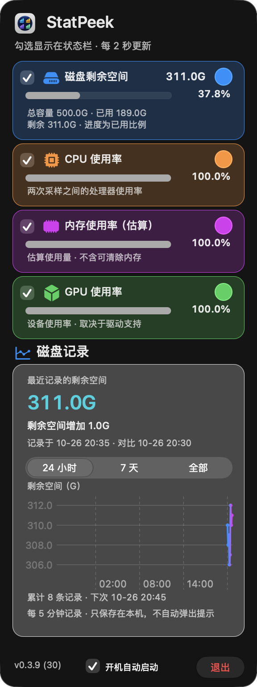
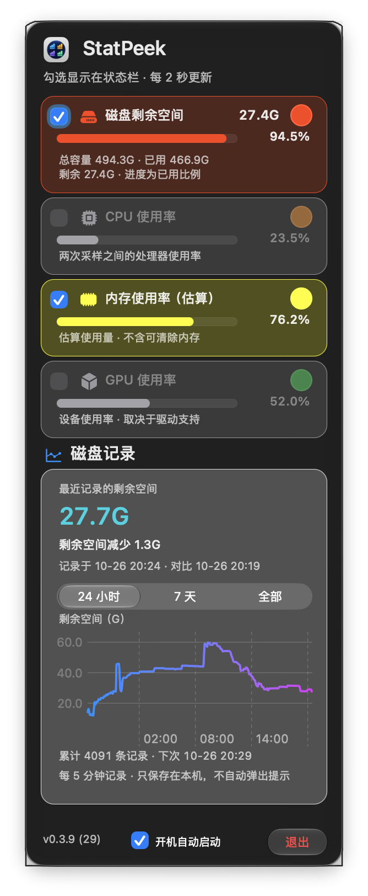

弹窗外沿杂线处理
2026-10-26 · 0.3.9 (29) → 0.3.9 (30)
- macOS 26+ 保留原生玻璃，移除叠加的系统窗口阴影；模块的 0.5 pt 配色边框与 22% 底色保持。
- 原生玻璃的圆角与内容裁切正常。非激活窗口阴影开关试验确认窗口阴影会另加外沿，但未稳定复现用户活动状态下的完整杂线，不能把普通回归称为原现场已复现并消除。
原始独立非激活窗口截图，全部为合成指标/临时历史数据，无滤镜；夹具从实际 App 包读取图标，不使用命令行工具的通用图标。20 个浅深色、高度与滚动状态，三段切换及刷新保持检查通过。未操作用户桌面鼠标键盘。
同一合成数据夹具的前后实窗
下方原图按相同比例显示，后图以 CSS 补齐前图的阴影留白，未修改图片像素。用户现场与夹具的活动状态不同。
调整前 · Build 29 · 叠加窗口阴影 调整后 · Build 30 · 仅保留原生玻璃
调整后 · Build 30 · 仅保留原生玻璃
top / middle / bottom 对应 24 小时 / 7 天 / 全部，图表按范围更新。安装与验证回执 · 完整布局测量
用户提供的现场截图
以下为用户报告的原图，包含真实读数；与上方合成数据夹具区分。

最小窗口阴影差分试验
独立非激活空玻璃面板，反复切换高度后分别开启与关闭窗口阴影。此处验证额外外沿的来源，不代表完整复现现场杂线。